What is AI
The 3 eras of AI
AI has embraced very different technologies during its history:
- classical code if → then → else
- expert system using human-made rules
- statistical algorithms machine learning the rules
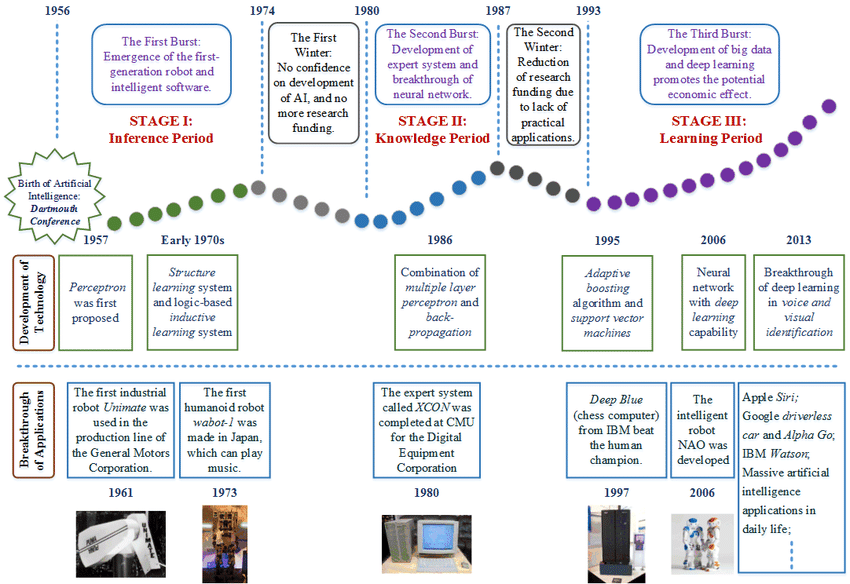
AI is machine learning
Knowledge is extracted from data. Machine learning is a combination of:
- statistical algorithms
- systematic experimental process
Basically, it's experimentation with algorithms.
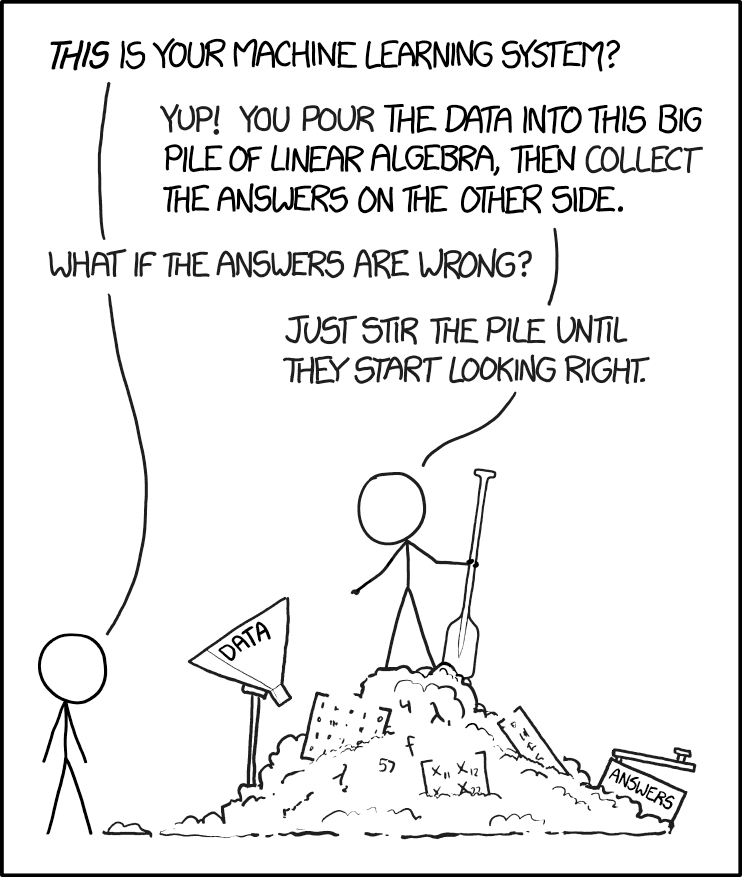
Principles of machine learning
The model computes predictions. E.g:
- linear regression
- decision trees
-
SVM The optimizer tunes the model to reduce the prediction error. E.g:
-
gradient descent
- genetic algorithms
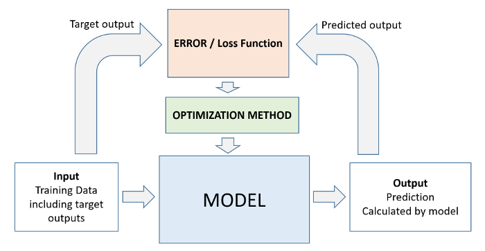
Differentiable programming
Machine learning by gradient descent is an optimisation of a differentiable function:
- A differentiable function allows to compute the error gradient
- Each iteration, the gradient shows how to modify the model parameters to reduce the error.
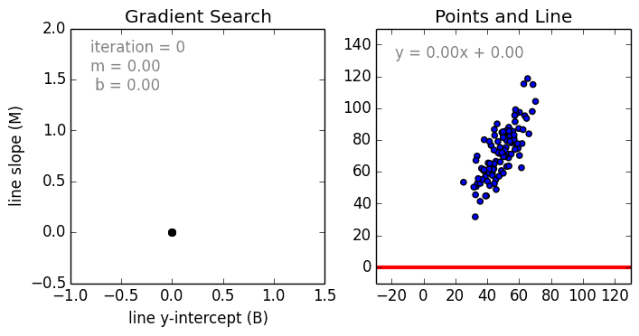
Note
If the function we want to optimize is not differentiable, we use other optimization algorithms (such as random search, genetic algorithms, bayesian optimization, ...), it is then called black box optimization.
Demo: Interactive linear regression
👉 Interactive linear regression – GeoGebra
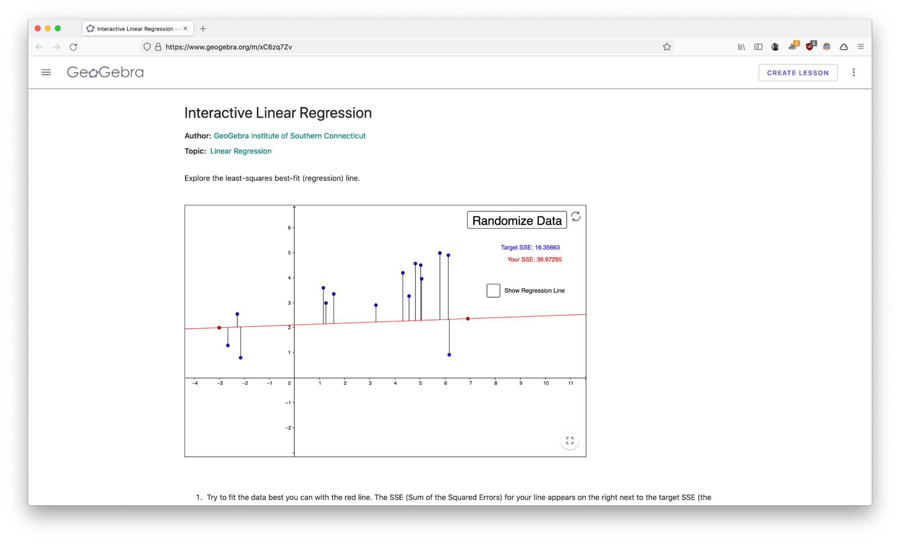
The deep learning revolution
Simple models (neurons) are combined together to create a complex model.
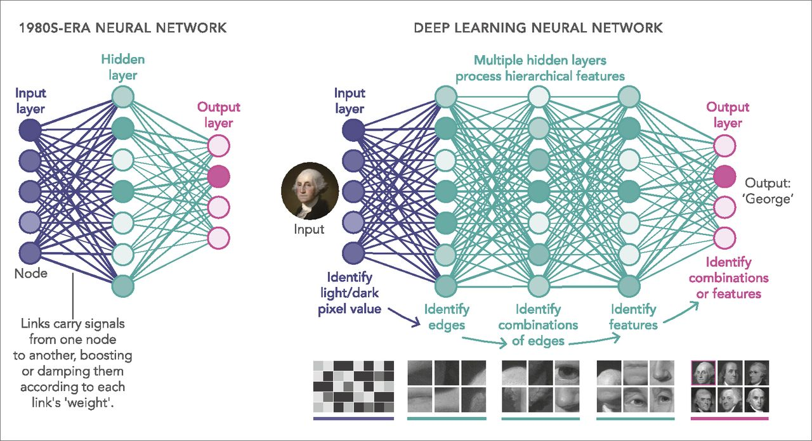
Why deep learning is big deal
👍 Less preprocessing & feature engineering
👎 Needs much more data 💾 and computing 🥵
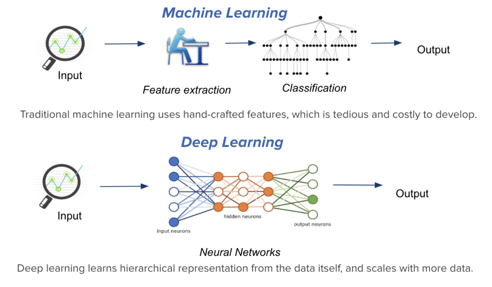
Demo: Image classification
Teachable machine - image model
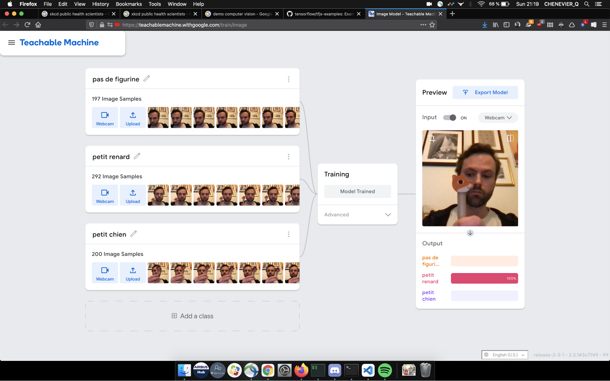
But deep learning is superficial
Deep learning is cool, but you can't deliver without mastering:
- data collection
- data storage
- data cleaning & preparation
- feature engineering
- simple ML algorithms
Deep learning is less than 5% of data projects in industry.
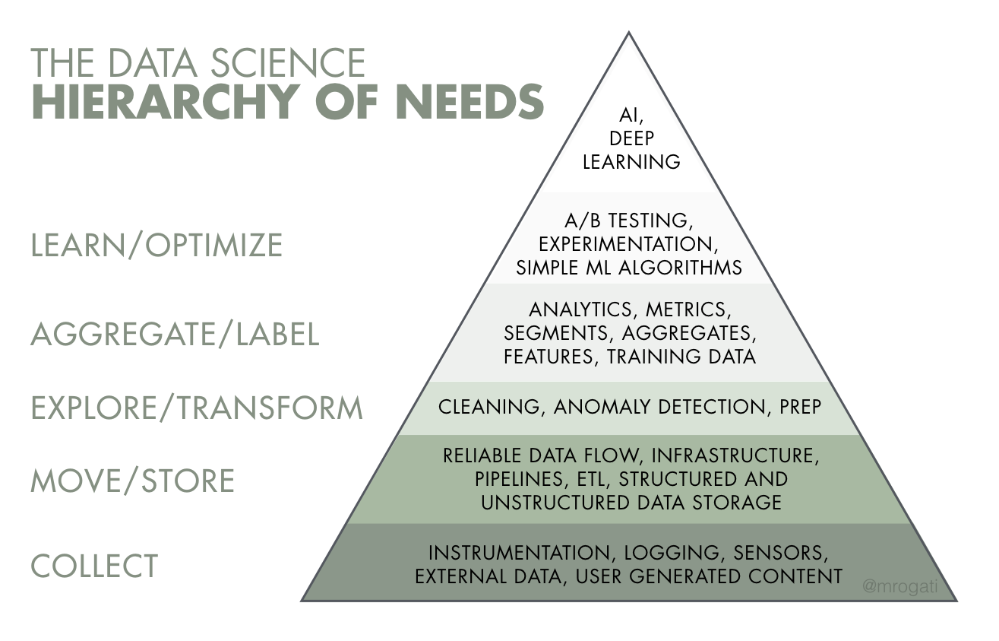
Data is the enabler
AI breakthroughs happen thanks to:
- Old algorithms
- New datasets
Data is the true enabler of AI research breakthroughs.
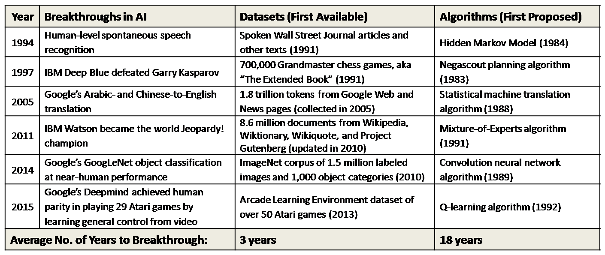
Careers in big data & AI
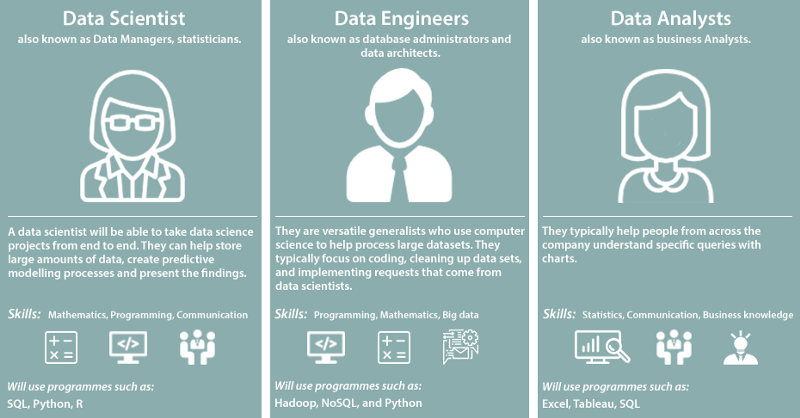
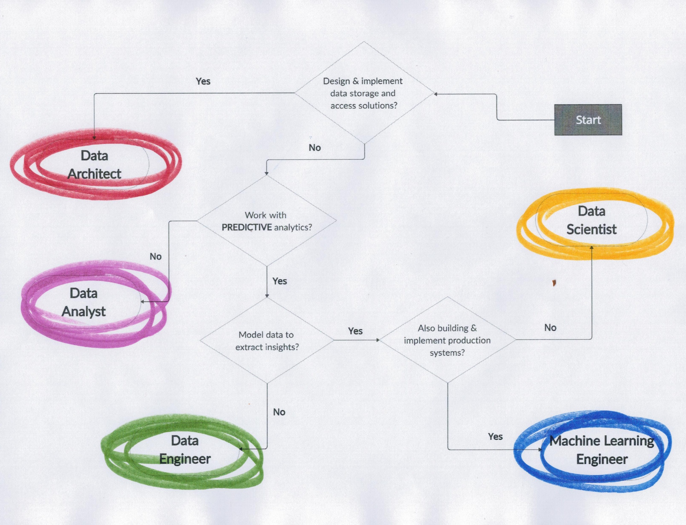
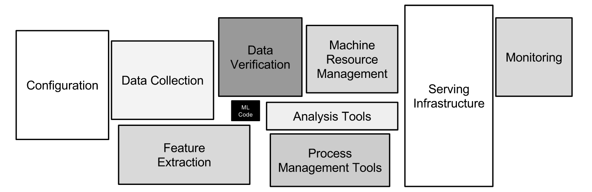
Forget the ambiguous job names, focus on skills. What are the skills mentioned in a job description ?
AI Applications in civil aviation
Air traffic conflict detection & resolution
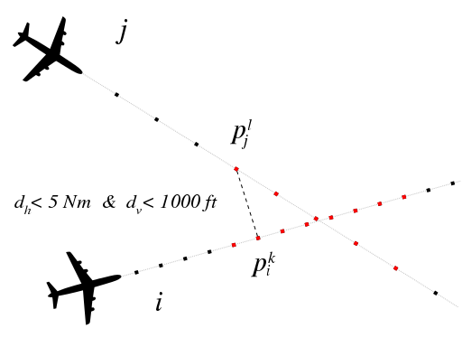
Aircraft taxi routing
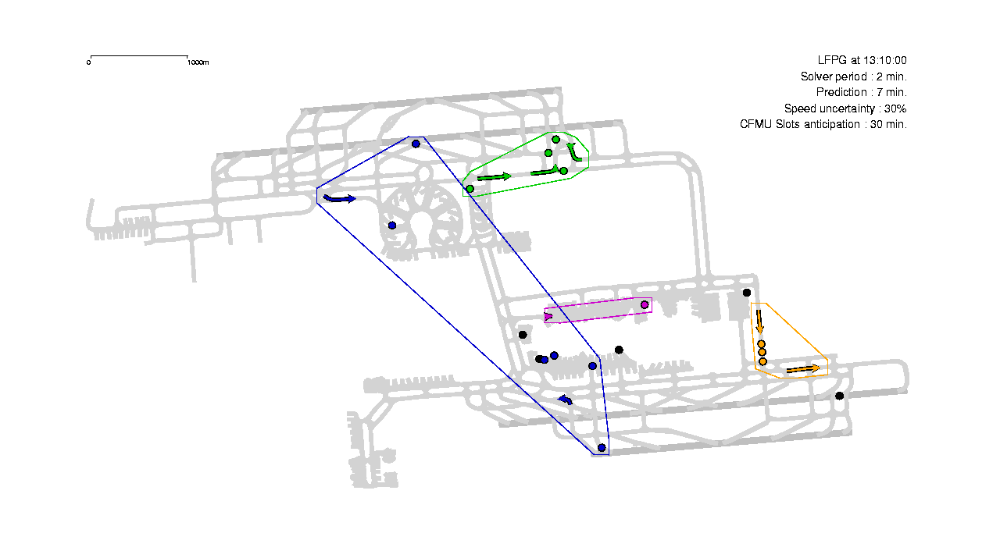
ATM workload forecast & ATM sector management
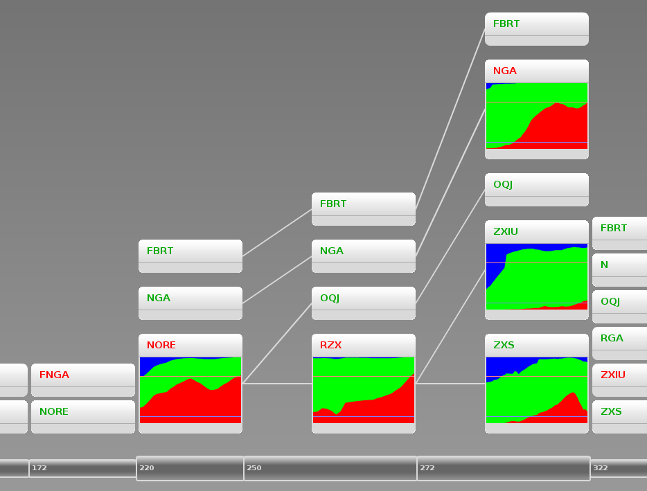
Air traffic planification
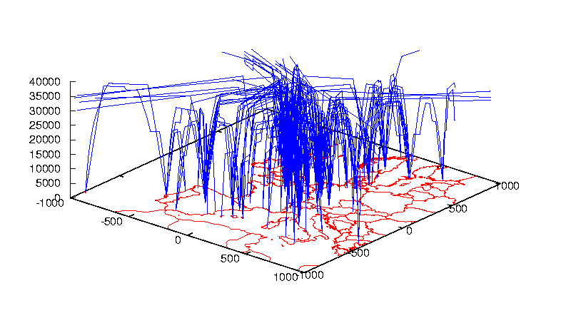